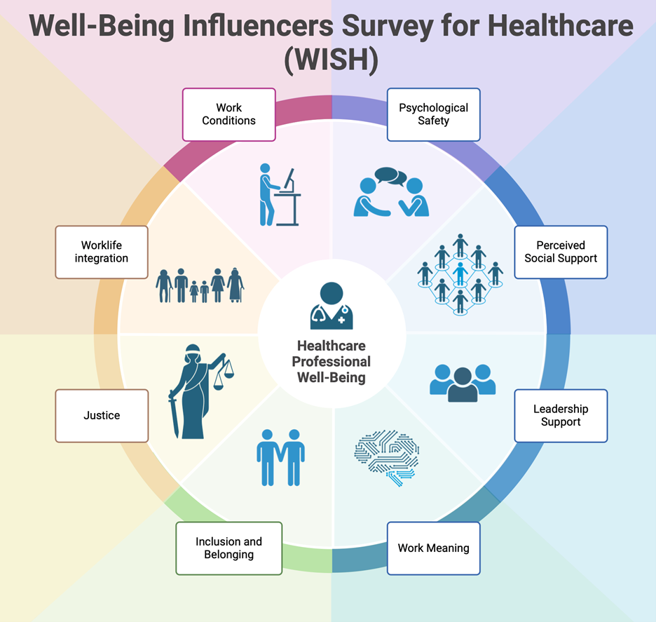

Welcome to WISH
WISH is a novel survey tool measuring workplace influencers of well-being in healthcare workers.
By targeting influencers of well-being, we can get upstream of burnout and attrition, fostering sustainable and rewarding careers for healthcare workers.
WISH was recently published in Anesthesiology, here's a link to the validation paper: Measuring Well-Being Influencers: Development and Validation of the WISH Inventory

WISH measures the following influencers.
- Psychological Safety (3 items): A workplace attribute where individuals feel safe to share ideas, ask questions, and admit mistakes without fear, fostered by leadership, teamwork, and mutual respect.
- Perceived Social Support (5 items): Emotional and practical support from coworkers, proven to enhance job satisfaction and protect against burnout.
- Leadership Support (3 items): Support from leaders who prioritize employee growth, ethical decision-making, and transparency, shown to directly improve well-being and engagement.
- Work Meaning (5 items): Purpose and fulfillment supported by autonomy, skill growth, contributions to the greater good, and recognition, essential for engagement and professional satisfaction.
- Inclusion and Belonging (4 items): Being valued as an individual while contributing meaningfully to the team, linked to creativity, commitment, and overall workplace well-being.
- Justice (3 items): Occupational fairness where transparent policies, clear decision-making, and responsive leadership create trust and promote well-being.
- Work Life Integration (3 items): “Balance” enabled from such aspects as flexible scheduling and predictable workloads that reduce work-life conflict, foster loyalty, reduce absenteeism, and mitigate burnout.
- Work Conditions (4 items): The environment and resources that support healthcare professionals in doing their jobs effectively, critical for job satisfaction and reducing burnout risk.
- Two additional items measure a department's well-being-related priorities.